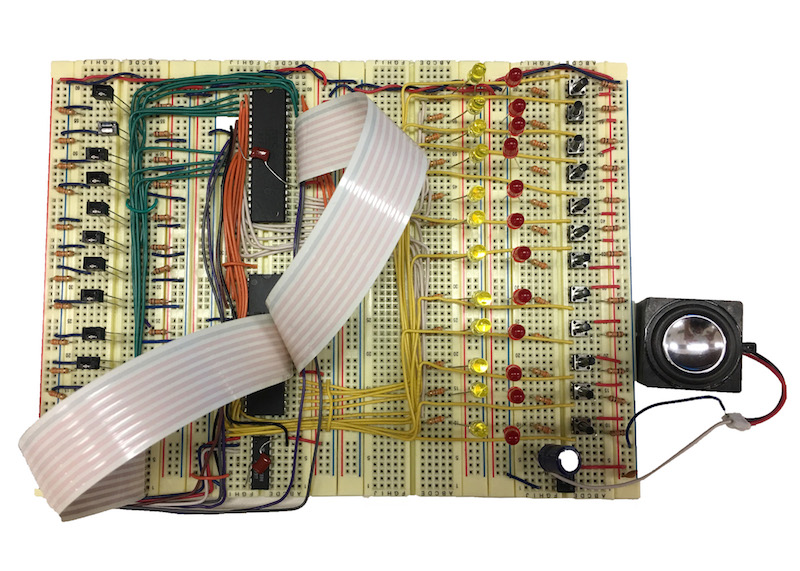

In the spring of 2017, I took the notorious 6.115 Microcomputer Project Laboratory. For most of the semester, we played with Intel 8051 to learn how microcontrollers worked and how to build elegant systems. For the final project, we had the freedom to build whatever we wanted as long as we incorporate both the 8051 and PSoC. I wanted to make a physical version of those apps that teach you how to play the piano. I envisioned a hybrid of piano-musicbox that takes in punchcard music sheets and, based on user selection, either play out the song through a speaker or light up the keys to guide the user to play. Here's the proposal I wrote for the class.
I was able to complete most of the core functions before the deadline. Unfortunately, I didn't have time to finish the box to enclose my system so it actually looks like a little piano. The next step is to improve the aesthetics of the project soon.
Overview of the system: 8051 is in the black suitcase (it was a great workout to carry the suitcase across campus and trek through snow storm :P) and PSoC mostly controls components on the yellow breadboards. Exact functions of both chips were described in the proposal.
Piano Prototype.